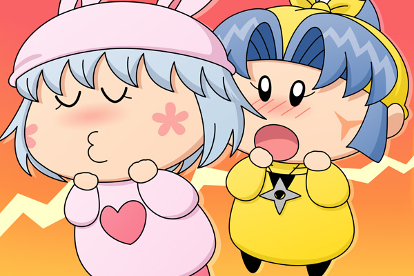

パピィ「あら、ヤマネたんじゃないの。
どうちたの？急に・・」
パピィの家を訪れたヤマネは部屋に案内され、ヤシチにかかわるこれまでのいきさつをパピィに打ち明けました。
話を進めていると、パピィがはぁとため息をひとつ。
パピィ「ヤマネたん、全然分かってないわ。
そんな回りくどいことするんじゃなくて、恋は行動あるのみよ！」
ヤマネ「それはどんな行動なのでございましょう？」
ヤマネが目を輝かせながらパピィに質問します。
パピィ「行動といったらもちろんこれね。
ん～～」

目を閉じ口をとがらせるパピィ。
誰の目から見てもそれはキスのポーズではありますが、どうもヤマネの反応は今ひとつのようです。
ヤマネ「？」
パピィ「んもう！キスに決まってるでちょ！」
ヤマネ「キスでございま・・・キ、キス！？せ、接吻！？
そんな・・いきなり早すぎるでございます～～っ」
パピィ「早いとか遅いとか関係ないわよ！
ちょっとほっぺにキスするだけで男なんていちころなんだから」
ヤマネ「パ、パピィ殿って大人でございますね」
パピィ「そうよ、わたちだってこう見えてもムルモとうまく
いってるんだから」
（注：パピィはムルモにまだキスをしたことはありません）
ヤマネ「何だか自信がわいてきたでございます。
今日はありがとうございました！」
パピィ「わたちも応援するわ」
アドバイスをくれる妖精も４人目になり、いつまで経っても成功しないヤマネがだんだんと可哀想に思えてきます。が、今回は１話完結ではなく次回に続きます。果たして新展開となるのか否か、お楽しみに(^^)。
そういえばパピィのこの表情は前にも描いたっけ。今頃ムルモは背筋がぞくぞくしているかもしれませんね（ヤシチの方はもっとぞくぞくしているかも）。ところでヤシチファンやヤマネファンの方に、ヤマネとヤシチがくっつこうとしていることに対する意見をぜひ聞いてみたいです。妖精忍者は人気が高いので、いろいろな意見が聞けたりして。
(2009/10/30)